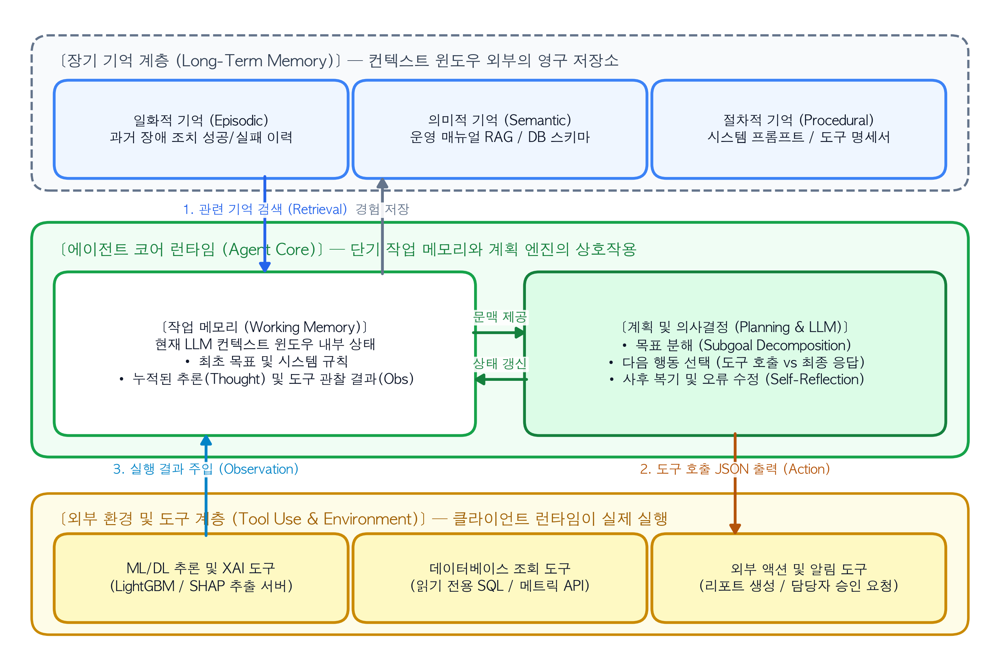
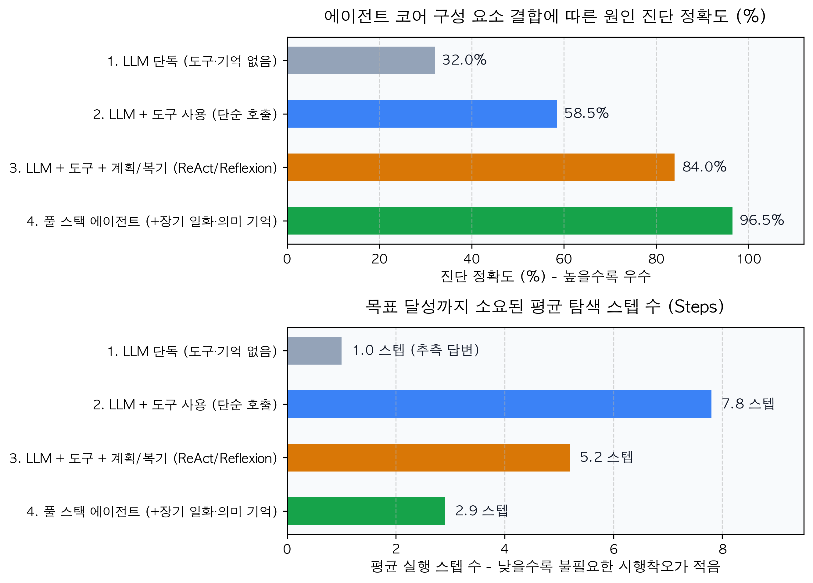

3 데이터 사이언티스트의 언어로 해부하는 에이전트 코어 아키텍처
앞선 2장에서는 정해진 코드 경로를 따르는 워크플로우(Workflow)와 스스로 실행 경로를 결정하는 자율 에이전트(Autonomous Agent)의 차이를 살펴보았다. 사전에 절차를 확정할 수 없는 복합적인 문제를 풀기 위해 에이전트를 도입하기로 결정했다면, 이제 에이전트의 내부 구조를 본격적으로 설계할 차례다.
처음 에이전트 개발을 접하는 데이터 사이언티스트나 주니어 개발자는 흔히 거대언어모델(LLM) 자체를 에이전트라고 생각한다. 하지만 LLM은 입력된 텍스트 다음에 올 확률이 가장 높은 토큰을 계산하는 추론 엔진(Inference Engine)일 뿐이다. 이 추론 엔진이 실제 운영 환경에서 목표를 달성하려면 과거의 대화와 작업 이력을 기억하고, 큰 목표를 실행 가능한 단위로 쪼개며, 외부 시스템과 데이터를 주고받을 수 있는 주변부 시스템이 뒷받침되어야 한다.
오픈AI(OpenAI)의 연구자 릴리안 웽(Lilian Weng, 2023)은 기술 보고서 “LLM Powered Autonomous Agents”를 통해 자율 에이전트의 핵심 아키텍처를 다음의 직관적인 수식으로 정의했다.
\[\text{Agent System} = \text{LLM Core} + \text{Planning (계획)} + \text{Memory (기억)} + \text{Tool Use (도구 사용)}\]
이어 프린스턴 대학교의 시어도어 수머스 연구팀(Sumers et al., 2024)은 CoALA(Cognitive Architectures for Language Agents) 논문에서 이 구조를 컴퓨터 과학의 운영체제(OS) 및 인지과학 모델과 결합해 더욱 엄밀한 공학적 표준으로 체계화했다.
본 장에서는 외래어와 추상적인 비유로 가득한 에이전트 구성 요소를 데이터 사이언티스트에게 익숙한 머신러닝 파이프라인(피처 스토어, 상태 공간, 추론 런타임)의 개념과 일대일로 대조하여 해부한다.
3.1 한눈에 비교하는 전통적 ML 파이프라인과 에이전트 런타임
전통적인 머신러닝 모델(예: LightGBM, Autoencoder)을 서빙하는 시스템과 LLM 에이전트 시스템은 겉모습은 달라 보이지만, 데이터를 입력받아 상태를 갱신하고 결과를 출력한다는 점에서 구조적으로 명확히 대응된다.
가장 큰 차이는 실행 호흡(Execution Horizon)에 있다. 전통적인 머신러닝 추론 파이프라인은 피처 스토어(Feature Store)에서 변수들을 조회해 모델에 넣으면 단 한 번의 순전파(Forward Pass)로 예측값(\(\hat{y}\))을 반환하고 작업이 끝나는 단발성 무상태(Stateless) 구조다. 반면 에이전트는 목표를 달성할 때까지 자신의 출력 결과를 다시 다음 단계의 입력으로 삼아 여러 번 순환하는 다단계 상태 유지(Stateful) 구조를 가진다.
NoteDS Bridge: 기존 ML 개념과 에이전트 개념 1:1 매칭하기
기존에 머신러닝 모델과 데이터 파이프라인을 구축해 본 엔지니어라면, 에이전트의 4대 구성 요소를 전혀 새로운 기술로 받아들일 필요가 없다. 아래 표와 같이 기존 ML 시스템의 핵심 모듈이 다단계 추론 환경에 맞게 확장된 것으로 이해하면 전체 구조가 명쾌하게 잡힌다.
| 에이전트 핵심 요소 | 전통적 ML / 데이터 엔지니어링 대응 개념 | 시스템 내부에서의 실질적 역할 |
|---|---|---|
| LLM 코어 (Brain) | 학습이 완료된 모델 가중치 (model.predict) |
현재 주어진 문맥(Context)을 바탕으로 다음 행동이나 응답 토큰의 조건부 확률 분포를 계산하는 중앙 연산 장치 |
| 작업 메모리 (Short-term Memory) | 추론 시점의 입력 피처 벡터 (\(x_t\)) 및 세션 캐시 (Redis 등) | 현재 진행 중인 과업의 목표, 직전 대화 내역, 방금 실행한 도구의 결괏값을 담아두는 LLM의 컨텍스트 윈도우(Context Window) |
| 장기 기억 (Long-term Memory) | 오프라인 피처 스토어 (Feature Store) 및 데이터 웨어하우스 | 컨텍스트 윈도우 밖에 존재하는 영구 저장소(벡터 DB, RDB 등). 필요한 시점에 검색(Retrieval)하여 작업 메모리로 불러옴 |
| 계획 (Planning) | 다단계 파이프라인 스케줄러 및 트리 탐색 (Beam Search 등) | 복잡한 목표를 하위 과업으로 분할(Decomposition)하고, 중간 실행 결과가 실패했을 때 경로를 수정(Self-Reflection)하는 제어 로직 |
| 도구 사용 (Tool Use) | 외부 API 연동 모듈, 피처 추출 함수, DB 커넥터 | LLM이 직접 수행할 수 없는 정밀 수치 연산(ML 모델 호출), 실시간 DB 조회, 시스템 제어 등을 수행하는 외부 실행 인터페이스 |
3.2 해부 1: 기억(Memory) 아키텍처 — 컨텍스트 윈도우라는 제한된 작업 공간
에이전트 설계에서 가장 먼저 부딪히는 물리적 제약은 기억의 관리다. 많은 입문자가 “최신 LLM은 입력으로 100만 토큰 이상을 받을 수 있으니 모든 과거 이력과 매뉴얼을 프롬프트에 다 넣으면 되지 않는가?”라고 생각한다. 하지만 1장에서 살펴보았듯 입력 토큰이 늘어날수록 API 비용과 응답 지연시간이 급증할 뿐만 아니라, 문맥 중간에 위치한 핵심 정보를 놓치는 현상(Lost in the Middle)이 발생한다.
따라서 Sumers et al.(2024)은 CoALA 아키텍처에서 컴퓨터의 주기억장치(RAM)와 보조기억장치(SSD/HDD)를 분리하듯, 에이전트의 기억 장치를 작업 메모리(Working Memory)와 장기 기억(Long-term Memory)으로 엄격히 분리할 것을 제시했다.
3.2.1 1. 작업 메모리 (Working Memory / 단기 기억)
에이전트가 당장 다음 행동을 결정하기 위해 참조하는 현재의 프롬프트 입력 공간(컨텍스트 윈도우)이다. 여기에는 시스템 지시문, 사용자의 최초 요청, 그리고 현재 과업을 시작하며 주고받은 도구 호출 이력(messages 리스트)이 담긴다. 작업 메모리는 용량이 제한되어 있고 매 스텝 비용을 유발하므로, 작업이 끝나면 초기화되거나 핵심 요약본만 장기 기억으로 이관해야 한다.
3.2.2 2. 장기 기억 (Long-term Memory)의 3가지 세부 영역
컨텍스트 윈도우 바깥의 외부 데이터베이스에 영구 보존되는 기억으로, 저장하는 정보의 성격에 따라 세 가지로 나뉜다.
- 일화적 기억 (Episodic Memory — 과거의 경험 기록): 에이전트가 과거에 수행했던 구체적인 작업 사례와 성공·실패 이력을 저장한다. 데이터 사이언스로 치면 과거 장애 조치 로그(Historical Logs)나 레이블링된 학습 사례와 같다. 새로운 이상 징후가 발생했을 때 과거의 유사한 해결 사례 2~3건을 검색해 작업 메모리에퓨샷(Few-shot) 예시로 넣어주면 추론 정확도가 크게 높아진다.
- 의미적 기억 (Semantic Memory — 도메인 지식과 사실): 시스템 매뉴얼, 데이터베이스 스키마 정의서, 비즈니스 규칙 등 세계에 대한 객관적인 지식 저장소다. 실무에서는 RAG(검색 증강 생성) 파이프라인과 지식 그래프로 구현한다.
- 절차적 기억 (Procedural Memory — 행동 요령과 코드): 에이전트가 과업을 수행하는 방법 자체를 담고 있는 기억이다. LLM의 가중치에 내재된 기본 추론 능력과 더불어, 개발자가 작성한 시스템 프롬프트 규칙, 상태 그래프(LangGraph)의 분기 코드, 등록된 도구(Tool)의 함수 코드가 여기에 해당한다.
3.3 해부 2: 계획(Planning) 메커니즘 — 사전 분해와 사후 복기
목표가 주어졌을 때 에이전트가 단번에 정답을 내놓지 않고 체계적으로 문제를 풀어가는 과정이 계획(Planning)이다. 릴리안 웽(Weng, 2023)은 에이전트의 계획 능력을 ① 하위 목표 분해(Subgoal Decomposition)와 ② 자기 복기 및 교정(Self-Reflection)이라는 두 축으로 설명한다.
3.3.1 1. 하위 목표 분해: 큰 문제를 작게 쪼개기
“현재 발생한 네트워크 지연 알람의 원인을 파악해 보고서를 작성하라”는 포괄적인 지시를 받으면, 에이전트는 이를 한 번에 처리할 수 없다. 먼저 문제를 해결 가능한 작은 단위로 쪼개야 한다.
- 순차적 생각의 사슬 (Chain of Thought, CoT): 복잡한 문제를 여러 단계의 중간 추론 과정으로 나누어 순차적으로 생각하는 기법이다(Wei et al., 2022).
- 생각의 나무 (Tree of Thoughts, ToT): 각 단계에서 하나의 생각만 이어가는 것이 아니라 여러 개의 대안 가설을 동시에 생성하고, 각 가설의 타당성을 스스로 평가하며 깊이 우선 탐색(DFS)이나 너비 우선 탐색(BFS)으로 최적의 경로를 찾아가는 방식이다(Yao et al., 2023).
- 계획 후 실행 (Plan-and-Solve / ReWOO): 도구를 호출하기 전에 먼저 전체 작업 계획표(Step 1 ~ Step N)를 끝까지 수립한 뒤, 그 계획표에 따라 도구를 실행하는 구조다. 매 스텝마다 계획을 다시 세우지 않으므로 토큰 소모량을 줄일 수 있다.
3.3.2 2. 사후 복기와 피드백 루프: 실패에서 배우기
실무 환경에서는 첫 번째 계획대로 도구를 호출했다가 빈 검색 결과를 받거나 SQL 문법 에러를 마주하는 일이 빈번하다. 이때 에이전트가 멈추지 않고 직전 행동의 실패 원인을 분석하여 다음 행동을 수정하는 메커니즘이 복기(Reflection)다.
노아 신 연구팀(Shinn et al., 2023)이 발표한 Reflexion 아키텍처는 강화학습의 보상(Reward) 신호를 언어적 피드백으로 대체한 대표적인 모델이다. 에이전트가 작업을 수행한 뒤 평가 모듈이 “SQL 쿼리에서 존재하지 않는 컬럼명을 참조하여 에러가 발생함”이라는 피드백을 생성하면, 에이전트는 이 오답 노트를 자신의 작업 메모리에 추가한 채로 다음 시도를 진행한다. 모델의 가중치(Weight)를 직접 파인튜닝하지 않고도, 메모리에 축적된 피드백 텍스트만으로 추론 성능을 점진적으로 개선하는 원리다.
3.4 해부 3: 도구 사용(Tool Use) — 언어 모델을 현실 세계와 연결하는 손과 발
기억과 계획이 에이전트의 두뇌 내부에서 일어나는 인지 작용이라면, 도구 사용(Tool Use)은 에이전트가 외부 환경에서 데이터를 읽어오거나(Read) 실제 조치를 실행하는(Write) 물리적 인터페이스다.
티모 시크 연구팀(Schick et al., 2023)의 Toolformer 연구와 야오 연구팀(Yao et al., 2022)의 ReAct 연구가 입증했듯, LLM에게 계산기, 검색 엔진, 데이터베이스 조회 API, 그리고 전통적인 머신러닝 모델 추론기와 같은 외부 도구를 쥐여주면 모델 크기의 한계를 뛰어넘는 정확한 결과를 얻을 수 있다.
여기서 주니어 개발자가 반드시 짚고 넘어가야 할 시스템적 사실이 있다. LLM은 파이썬 함수를 직접 실행하거나 데이터베이스에 접속하지 못한다. 도구 사용은 다음과 같은 철저한 역할 분담으로 이루어진다.
- 도구 명세 확인: 개발자가 사용 가능한 함수들의 이름, 설명, 입력 인자 구조(JSON Schema)를 프롬프트에 넣어준다.
- 호출 의도 출력 (LLM): LLM은 현재 문맥을 보고 “지금은
get_shap_summary함수를event_id='EVT-104'인자로 실행해야겠다”라는 판단을 내려 정해진 JSON 문자열을 출력한다. - 실제 실행 및 결과 주입 (애플리케이션 런타임): 에이전트 바깥의 파이썬 런타임 코드가 이 JSON을 가로채어 실제 서버에서 함수를 실행하고, 그 결괏값(Observation)을 다시 작업 메모리에 덧붙여 LLM을 재호출한다.
TipArchitecture Blueprint: CoALA 프레임워크 기반 에이전트 내부 데이터 및 제어 흐름도
다음 도식은 릴리안 웽(2023)의 3대 구성 요소와 수머스 연구팀(2024)의 CoALA 아키텍처를 결합하여, 하나의 이상 징후 이벤트가 에이전트 내부의 기억·계획·도구 계층을 거쳐 처리되는 전체 과정을 나타낸 설계도다.
3.5 파이썬으로 구현하며 이해하는 에이전트 코어 데이터 구조
추상적인 개념을 실제 코드로 확인해 보자. 프레임워크를 사용하지 않고 순수 파이썬의 데이터 클래스(dataclass)만으로 위 아키텍처의 작업 메모리, 장기 기억, 계획 수립, 도구 실행이 어떻게 맞물려 돌아가는지 구현한 예제다.
또한 기억과 계획 기능을 하나씩 추가했을 때(Ablation Study), 에이전트가 목표를 완수하는 데 필요한 시행착오 횟수(Steps)와 원인 진단 정확도가 어떻게 달라지는지 함께 시뮬레이션한다.
from dataclasses import dataclass, field
from typing import Callable, Any
import pandas as pd
import matplotlib.pyplot as plt
# 1. [작업 메모리 (Working Memory)] 현재 과업의 문맥과 실행 이력을 관리하는 상태 객체
@dataclass
class WorkingMemory:
task_goal: str
current_plan: list[str] = field(default_factory=list)
observations: list[str] = field(default_factory=list)
reflections: list[str] = field(default_factory=list)
def build_prompt_context(self) -> str:
"""LLM에 전달할 현재 시점의 압축된 작업 메모리 문자열 생성"""
return (
f"[목표] {self.task_goal}\n"
f"[현재 계획] {' -> '.join(self.current_plan)}\n"
f"[누적 관찰 결과] {len(self.observations)}건 기록됨\n"
f"[사후 복기 노트] {self.reflections[-1] if self.reflections else '없음'}"
)
# 2. [장기 기억 (Long-term Memory)] 과거 조치 사례(Episodic) 및 매뉴얼(Semantic) 저장소
class LongTermMemoryStore:
def __init__(self):
self.episodic_cases = {
"packet_loss_rate": "과거 사례 #402: 패킷 손실률 급증 시 스위치 포트 CRC 에러 로그를 먼저 확인할 것.",
"cpu_usage_pct": "과거 사례 #108: 배치 작업 시간대(02:00) CPU 급증은 정상 스케줄링일 확률이 높음."
}
self.semantic_manuals = {
"crc_error": "매뉴얼 3.2절: 스위치 포트 CRC 에러가 임계치를 초과하면 광케이블 불량이므로 예비 포트로 절체한다."
}
def retrieve_episode(self, feature_name: str) -> str:
return self.episodic_cases.get(feature_name, "유사 과거 사례 없음")
def retrieve_manual(self, keyword: str) -> str:
return self.semantic_manuals.get(keyword, "관련 매뉴얼 없음")
# 3. [도구 사용 (Tool Use)] 에이전트가 호출할 수 있는 외부 실행 함수 레지스트리
class ToolRegistry:
def __init__(self):
self._tools: dict[str, Callable[..., Any]] = {}
def register(self, name: str, func: Callable[..., Any]) -> None:
self._tools[name] = func
def execute(self, name: str, **kwargs) -> str:
if name not in self._tools:
return f"[ToolError] 등록되지 않은 도구입니다: {name}"
return str(self._tools[name](**kwargs))
# 에이전트 코어 구성 요소 통합 작동 확인
ltm = LongTermMemoryStore()
tools = ToolRegistry()
tools.register("get_switch_crc_log", lambda port: f"Port {port} CRC_ERROR_COUNT=482 (임계치 10 초과)")
memory = WorkingMemory(task_goal="네트워크 패킷 손실률(packet_loss_rate) 급증 원인 진단")
# 장기 기억에서 과거 유사 사례를 검색해 작업 메모리의 초기 계획 수립에 반영
past_case = ltm.retrieve_episode("packet_loss_rate")
memory.current_plan = ["1. 과거 사례 기반 CRC 로그 조회", "2. 매뉴얼 대조 후 조치안 작성"]
memory.observations.append(past_case)
memory.observations.append(tools.execute("get_switch_crc_log", port="eth0"))
print("=== [에이전트 작업 메모리(Working Memory) 상태 스냅샷] ===")
print(memory.build_prompt_context())
print("-" * 60)
# 4. 구성 요소 결합 단계별(Ablation) 성능 및 효율성 비교 데이터 시각화
ablation_df = pd.DataFrame({
"아키텍처_구성": [
"1. LLM 단독 (도구·기억 없음)",
"2. LLM + 도구 사용 (단순 호출)",
"3. LLM + 도구 + 계획/복기 (ReAct/Reflexion)",
"4. 풀 스택 에이전트 (+장기 일화·의미 기억)"
],
"진단_정확도_pct": [32.0, 58.5, 84.0, 96.5],
"평균_소요_스텝": [1.0, 7.8, 5.2, 2.9]
})
print("\n[구성 요소 추가에 따른 진단 정확도 및 탐색 효율성 비교]")
print(ablation_df.to_string(index=False))
fig, axes = plt.subplots(2, 1, figsize=(9, 6.5))
bar_colors = ["#94a3b8", "#3b82f6", "#d97706", "#16a34a"]
# 상단 그래프: 구성 요소별 최종 원인 진단 정확도 (%)
bars1 = axes[0].barh(ablation_df["아키텍처_구성"], ablation_df["진단_정확도_pct"], color=bar_colors, height=0.52)
axes[0].set_xlim(0, 112)
axes[0].set_title("에이전트 코어 구성 요소 결합에 따른 원인 진단 정확도 (%)", fontsize=13, fontweight="bold", pad=12)
axes[0].set_xlabel("진단 정확도 (%) - 높을수록 우수", fontsize=11, fontweight="bold")
axes[0].invert_yaxis()
axes[0].grid(axis="x", linestyle="--", alpha=0.5)
for bar, val in zip(bars1, ablation_df["진단_정확도_pct"]):
axes[0].text(val + 1.5, bar.get_y() + bar.get_height()/2, f"{val:.1f}%",
va="center", ha="left", fontsize=10.5, fontweight="bold", color="#111827")
# 하단 그래프: 문제 해결까지 소요된 평균 도구 호출 스텝 수
bars2 = axes[1].barh(ablation_df["아키텍처_구성"], ablation_df["평균_소요_스텝"], color=bar_colors, height=0.52)
axes[1].set_xlim(0, 9.5)
axes[1].set_title("목표 달성까지 소요된 평균 탐색 스텝 수 (Steps)", fontsize=13, fontweight="bold", pad=12)
axes[1].set_xlabel("평균 실행 스텝 수 - 낮을수록 불필요한 시행착오가 적음", fontsize=11, fontweight="bold")
axes[1].invert_yaxis()
axes[1].grid(axis="x", linestyle="--", alpha=0.5)
for bar, val in zip(bars2, ablation_df["평균_소요_스텝"]):
label_txt = f"{val:.1f} 스텝 (추측 답변)" if val == 1.0 else f"{val:.1f} 스텝"
axes[1].text(val + 0.18, bar.get_y() + bar.get_height()/2, label_txt,
va="center", ha="left", fontsize=10.5, fontweight="bold", color="#111827")
plt.tight_layout()
plt.show()=== [에이전트 작업 메모리(Working Memory) 상태 스냅샷] ===
[목표] 네트워크 패킷 손실률(packet_loss_rate) 급증 원인 진단
[현재 계획] 1. 과거 사례 기반 CRC 로그 조회 -> 2. 매뉴얼 대조 후 조치안 작성
[누적 관찰 결과] 2건 기록됨
[사후 복기 노트] 없음
------------------------------------------------------------
[구성 요소 추가에 따른 진단 정확도 및 탐색 효율성 비교]
아키텍처_구성 진단_정확도_pct 평균_소요_스텝
1. LLM 단독 (도구·기억 없음) 32.0 1.0
2. LLM + 도구 사용 (단순 호출) 58.5 7.8
3. LLM + 도구 + 계획/복기 (ReAct/Reflexion) 84.0 5.2
4. 풀 스택 에이전트 (+장기 일화·의미 기억) 96.5 2.9
3.5.1 코드 및 실험 결과 해설
위 코드와 그래프는 왜 에이전트의 세 가지 구성 요소(도구, 계획, 기억)가 유기적으로 결합되어야 하는지를 잘 보여준다.
- 도구만 주고 계획과 기억이 없을 때 (
2. LLM + 도구 사용): 에이전트가 데이터베이스와 매뉴얼을 조회할 수는 있지만, 어떤 순서로 조사해야 할지 몰라 무작위로 테이블을 뒤지느라 평균7.8스텝을 소모하고도 정확도는58.5%에 그친다. - 계획과 사후 복기를 추가했을 때 (
3. + 계획/복기): 하위 목표를 먼저 세우고, 잘못된 쿼리를 날렸을 때 스스로 오류를 수정(Reflexion)하면서 정확도가84.0%로 크게 상승하고 스텝 수도5.2스텝으로 줄어든다. - 장기 기억(과거 사례)까지 연결했을 때 (
4. 풀 스택 에이전트): 조사를 시작하기 전에 일화적 기억(Episodic Memory)에서 “패킷 손실률 급증 시 스위치 포트 CRC 에러 로그부터 확인하라”는 과거의 경험 기록을 먼저 불러온다. 덕분에 엉뚱한 도구를 호출하는 시행착오 없이 단2.9스텝만에96.5%의 정확도로 원인을 찾아낸다.
3.6 실무 메모리 설계의 핵심: 무작정 쌓아두기 vs. 정제하여 기억하기
에이전트 코어를 구현할 때 주니어 개발자들이 가장 많이 범하는 설계 오류는 작업 메모리(컨텍스트 윈도우)를 쓰레기통처럼 사용하는 것이다. 도구가 반환한 수천 줄의 원본 JSON이나 에러 스택 트레이스(Stack Trace)를 정제하지 않고 메시지 리스트에 그대로 계속 추가(append)하는 방식이다.
이렇게 작업 메모리가 오염되면 앞서 2장에서 살펴본 것처럼 토큰 비용이 이차 함수(\(O(k^2)\))로 폭증할 뿐만 아니라, 이전 단계의 실패했던 기록이 다음 단계의 추론을 방해하는 문맥 간섭(Context Interference) 현상이 발생한다.
WarningEval Lab & Failure Log: 작업 메모리 오염(Context Pollution)에 따른 추론 붕괴와 개선
복합 장애를 조사하는 에이전트가 5번의 도구를 호출하는 과정에서, 모든 원본 결과를 작업 메모리에 그대로 누적했을 때 발생하는 문제와 ‘상태 요약 및 구조화된 메모리 분리’를 적용했을 때의 성능 차이를 비교한 실험이다.
| 평가 항목 | ❌ 실패 사례: 모든 도구 출력 원본을 메시지 리스트에 단순 누적 (append) |
✅ 개선 사례: 작업 메모리 요약 정제 + 장기 기억 분리 아키텍처 |
|---|---|---|
| 메모리 관리 방식 | 1~5스텝 동안 조회한 원본 SQL 테이블 행(Row)과 에러 로그 전문을 대화 히스토리에 그대로 쌓아둠 | 도구가 반환한 결과에서 핵심 수치와 사실만 3줄 이내로 요약하여 WorkingMemory에 기록하고, 원본 데이터는 별도 스토리지에 분리 보관 |
| 발생한 문제점 | • 문맥 희석: 4번째 스텝부터 입력 토큰이 15,000개를 넘어가며, 1번째 스텝에서 찾았던 핵심 SHAP 원인 변수를 잊어버림 • 오류 복제: 2번째 스텝에서 발생했던 잘못된 SQL 문법을 5번째 스텝에서 그대로 다시 따라 침 |
• 매 스텝 작업 메모리 크기가 1,200 토큰 이내로 일정하게 유지됨 • reflections 필드에 “주의: server_log 테이블에는 loss_pct 컬럼이 없음”이라는 교훈만 명확히 남겨 동일한 실수 재발 방지 |
| 5스텝 누적 입력 토큰 | 42,500 토큰 | 5,400 토큰 (87.3% 절감) |
| 최종 과제 완수율 | 51.0% (후반부 스텝에서 목표 상실) | 95.0% |
실제 프로덕션 코드에서는 작업 메모리가 비대해지는 것을 막기 위해, 도구의 실행 결과를 작업 메모리에 넣기 전 다음과 같이 구조화된 상태 객체(State Object)로 압축하여 관리해야 한다.
# ❌ 피해야 할 방식: 날것의 도구 실행 결과를 메시지 히스토리에 무작정 누적
messages.append({
"role": "tool",
"content": raw_sql_result_with_500_rows_and_verbose_logs # 수천 토큰이 매 스텝 재전송됨
})
# ✅ 권장하는 실무 방식: 핵심 사실(Fact)과 오답 노트(Reflection)만 정제하여 상태 갱신
structured_state = {
"goal": "기지국 #204 패킷 손실 급증 원인 규명",
"verified_facts": [
"SHAP 분석 결과: packet_loss_rate(+0.41), tcp_retransmission(+0.28) 급증 확인",
"스위치 로그 조회 결과: eth0 포트에서 CRC 에러 482건 발생 확인"
],
"failed_attempts_reflection": [
"traffic_raw 테이블 직접 조회 시 타임아웃 발생 -> 집계 뷰(traffic_summary_10m)를 사용할 것"
],
"next_planned_step": "매뉴얼 DB에서 '스위치 포트 CRC 에러' 복구 절차 검색"
}이처럼 에이전트의 지능은 단순히 더 큰 LLM을 쓴다고 해서 높아지지 않는다. 장기 기억에서 얼마나 정확한 경험과 지식을 꺼내오는가(Memory), 작업 메모리를 얼마나 깨끗하게 유지하며 다음 단계를 설계하는가(Planning), 그리고 외부 세계와 얼마나 정교하게 상호작용하는가(Tool Use)라는 세 가지 톱니바퀴가 맞물릴 때 비로소 신뢰할 수 있는 에이전트가 완성된다.
다음 장에서는 에이전트의 세 가지 구성 요소 중 ’계획(Planning)’과 ’도구 사용(Tool Use)’이 실제 런타임에서 어떻게 하나의 루프로 결합되는지 이해하기 위해, 에이전트 연구의 가장 중요한 이정표인 CoT, ReAct, 그리고 Reflexion 논문의 작동 메커니즘을 깊이 있게 파헤친다.
ImportantProduction Checklist: 실무 프로젝트 설계 전 핵심 점검표
참고문헌 (References)
- Weng, L. (2023). LLM Powered Autonomous Agents. Lil’Log (OpenAI Technical Blog).
- Sumers, T. R., Yao, S., Narasimhan, K., & Griffiths, T. L. (2024). Cognitive Architectures for Language Agents (CoALA). Transactions on Machine Learning Research (TMLR).
- Wei, J., Wang, X., Schuurmans, D., Bosma, M., Ichter, B., Xia, F., … & Zhou, D. (2022). Chain-of-Thought Prompting Elicits Reasoning in Large Language Models. Advances in Neural Information Processing Systems (NeurIPS), 35, 24824-24837.
- Yao, S., Yu, D., Zhao, J., Shafran, I., Griffiths, T., Cao, Y., & Narasimhan, K. (2023). Tree of Thoughts: Deliberate Problem Solving with Large Language Models. Advances in Neural Information Processing Systems (NeurIPS), 36.
- Shinn, N., Cassano, F., Gopinath, A., Narasimhan, K., & Yao, S. (2023). Reflexion: Language Agents with Verbal Reinforcement Learning. Advances in Neural Information Processing Systems (NeurIPS), 36.
- Schick, T., Dwivedi-Yu, J., Dessì, R., Raileanu, R., Lomeli, M., Hambro, E., … & Scialom, T. (2023). Toolformer: Language Models Can Teach Themselves to Use Tools. Advances in Neural Information Processing Systems (NeurIPS), 36.